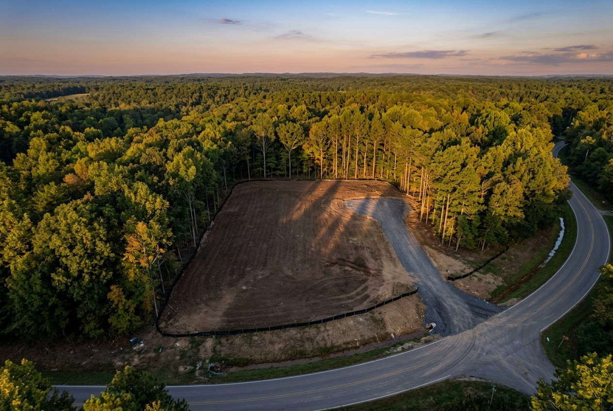
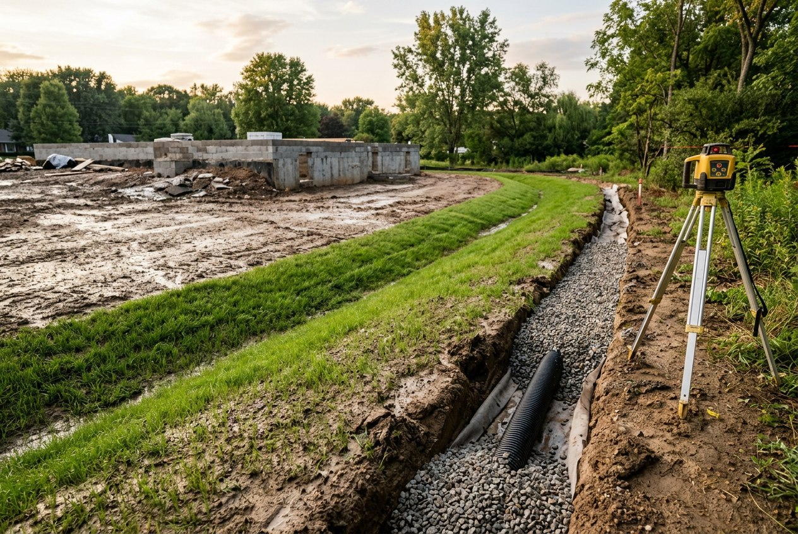

By the Editorial Team | Published: July 2026 | Last Updated: July 2026
Nearly every chronic problem a house develops below the roofline involves water: damp basements, heaved walks, settled slabs, iced driveways, saturated lawns. And nearly all of it traces to grading - the engineered shaping of the ground so that water moves away from structures instead of toward them. Grading is unglamorous, largely invisible when done well, and more consequential to a home's long-term health than most finishes owners deliberate over for weeks.
Positive drainage means the finished ground surface slopes away from the building in every direction. The widely used standard, reflected in the International Residential Code, is a fall of at least six inches within the first ten feet from the foundation - roughly a five percent slope. Beyond that first apron, lawns can carry water at gentler grades (one to two percent minimum keeps water moving; anything flatter ponds), while paved surfaces need at least one percent, and more where ice is a concern.

The counterpart rule is that water must have a destination. Sloping ground away from the house merely relocates the problem unless the water is delivered to a swale, a storm system, a dry well, or a natural low that can absorb it - legally. Grading that discharges concentrated runoff onto a neighboring property invites both erosion and litigation; most jurisdictions prohibit altering drainage patterns to a neighbor's detriment.
| Tool | What it does |
|---|---|
| Swale | A broad, shallow grassed channel that intercepts and conveys surface water around structures |
| Berm | A raised earthen mound that blocks or redirects flow, often paired with a swale |
| French drain | Perforated pipe in a gravel-filled, fabric-wrapped trench that collects subsurface water and carries it away |
| Foundation (footing) drain | Perimeter pipe at footing level relieving groundwater pressure against the basement |
| Dry well | Buried gravel or chambered reservoir that accepts collected water and infiltrates it into surrounding soil |
| Catch basin | Surface inlet with a sediment sump feeding piped drainage from low spots and paved areas |
| Downspout extensions/leaders | Carry roof water - the largest single water source - well clear of the foundation |
Roof water deserves special respect: a modest roof sheds hundreds of gallons in an inch of rain. Downspouts that release at the foundation corner undo everything the grading accomplished; piping them to daylight, a dry well, or a storm connection is among the cheapest drainage insurance available.
Site grading reshapes earth by cutting high ground and filling low ground. The economics favor balancing the two on site - trucking soil in either direction is expensive - but fill has an engineering rule attached: anything structural must bear on properly compacted fill placed in thin lifts and tested, or on undisturbed native soil. Settled fill under slabs, walks, and additions is one of the most common and avoidable construction defects. Topsoil, which compresses and decomposes, is never structural fill; it is stripped, stockpiled, and returned as the growing surface.

Soil type quietly governs every drainage decision. Sandy and gravelly soils drink water where dense clays shed it; the same swale that disappears water on one lot ponds it on the neighbor's. Infiltration-based solutions - dry wells, rain gardens, permeable paving - only work where percolation supports them, which is why serious drainage design begins with a soil evaluation rather than a catalog of devices.
On sloped sites, grading interacts with retaining structures. Walls above modest heights (commonly four feet, measured from the bottom of the footing) typically require engineering and permits, and every wall needs its own drainage - retained soil holding water becomes a hydraulic press against the wall.
Freezing rewrites drainage rules. Water that lingers on pavement becomes ice; shaded north-side walks and drives need steeper effective slopes or heat sources because they never get the sun's help. Frost heave lifts anything bearing on water-holding soils, which is why footings extend below frost depth and why saturated ground against a foundation in November becomes a lateral jack by February. Subsurface pipes must either run below frost depth or maintain continuous fall so they drain empty; a footing drain that holds water where it freezes is a plug, not a drain.
Grading exposes soil, and exposed soil moves in rain. Construction projects use silt fences, erosion-control blankets, stabilized construction entrances, and prompt seeding to keep sediment on site - and municipalities increasingly require documented stormwater management for any significant land disturbance, from simple erosion-control plans to engineered systems that detain post-construction runoff at pre-development rates. Wetland buffers, floodplains, and steep-slope ordinances further constrain what grading is allowed where; these constraints belong on the plan before design, not discovered during excavation.
Grading is designed hand-in-hand with house placement, driveway routing, and utility runs - the whole-site sequence that site development and whole-home planning for custom homes is built around.
Six inches of fall in the first ten feet is the standard minimum. Where lot lines or structures make that impossible, codes allow engineered alternatives - swales or drains that achieve the same water removal in less distance.
Construction is similar - perforated pipe in gravel - but location and job differ. A footing drain rings the foundation at footing depth to relieve groundwater around the basement; a French drain is placed anywhere on the lot to intercept subsurface flow, often upslope of a problem area.
Overall slope doesn't guarantee local slope: settled backfill around the foundation often creates a hidden trough that funnels water downward, and short downspouts feed it. Re-establishing the foundation apron grade and extending leaders solves a large share of wet-basement complaints before any interior system is considered.
Small surface corrections, yes. Anything involving drainage structures, retaining walls, significant cut and fill, or changes near property lines warrants professional design - and possibly permits. The cost of getting compaction or discharge wrong exceeds the design fee by an order of magnitude.
Grass can be mowed safely up to roughly a 3:1 slope (33 percent). Steeper faces are better treated as planted banks, terraces, or walls - turf on steep grades erodes and is hazardous to maintain.
To daylight well away from the foundation, to a dry well, or to a storm system where connection is permitted - never to the sanitary sewer (illegal in most places) and never onto a neighboring lot or right at the foundation, where it simply recirculates through the ground back to the sump. A discharge that freezes shut in winter needs an air-gapped or buried route.